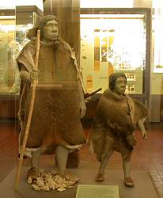

| In English |
| In English |
Urgeschichtliches Museum in Blaubeuren
Touristische Informationen:
|  |
| Bild: ein Steinzeitmensch mit seinem Sohn. |
| Ort: | In Blaubeuren. 16km W Ulm an der B28. A8 Ausf. Merklingen über Machtolsheim. Von Ulm/Stadtautobahn Ausf Blaubeurer Ring, B28. In Blaubeuren im Zentrum, am Anfang der Fußgängerzone, beschildert. (74,Ke58) |
| Öffnungszeiten: |
Winter (Nov bis März) Di, Sa 14-17, So 10-17.
Sommer (Apr bis Okt) Di-So, Fei 10-17. Der Wechsel zwischen Sommer und Winter ändert sich jedes Jahr. Für mehr Details besuchen Sie bitte die offizielle Homepage. [2004] |
| Eintrittspreise: |
Erwachsene EUR 2,50, Kinder (8-18) EUR 1,50, Ermäßigt EUR 1,50, Familienkarte EUR 7. Gruppen (8+): Erwachsene EUR 2, Kinder (8-18) EUR 1, Ermäßigt EUR 1. [2004] |
| Führungen: | Nach Vereinbarung |
| Fotografieren: | |
| Zugänglichkeit: | |
| Literatur: | |
| Adresse: |
Urgeschichtliches Museum, Karlstr. 21, 89143 Blaubeuren, Tel: 07344-9286-0, Fax: 07344-9286-15.
E-mail: |
| Nach unserem Wissen sind die Angaben für das in eckigen Klammern angegebene Jahr korrekt. Allerdings können sich Öffnungszeiten und Preise schnell ändern, ohne daß wir benachrichtigt werden. Bitte prüfen Sie bei Bedarf die aktuellen Werte beim Betreiber, zum Beispiel auf der offiziellen Website in der Linkliste. |
|
Bemerkungen
 |
| b>Bild: ein steinzeitlicher Stamm lebt in einer Blautalhöhle. |
Das Urgeschichtliche Museum Blaubeuren zeigt alt- und mittelsteinzeitliche Funde aus den Höhlen des Blau- bzw. Achtals. In den letzten Jahren beschäftigt man sich hier außerdem stark mit experimenteller Archäologie.
Dieses Museum wird von der Stadt Blaubeuren betrieben und vom Institut für Urgeschichte der Universität Tübingen wissenschaftlich betreut. Grundlage sind die Sammlungen des Geologen und Archäologen Gustav Riek.
 |
| Bild: Ausgrabungen in der nahegelegenen Brillenhöhle. |
Das Museum wurde in den letzten Jahren gründlich umgebaut und besitzt so heute eine der schönsten Sammlungen zum Thema Leben in der Urzeit im Süddeutschen Raum. Wesentliche Sehenswürdigkeit sind die vielen Dioramen, die das Leben in der Steinzeit anschaulich rekonstruieren. Wechselausstellungen zum Thema Urgeschichte und Höhlenforschung und Archäologische Wanderungen mit Führung zu den prähistorischen Fundstellen im Achtal runden das Angebot ab.
Die ältesten Höhlenmalereien der Welt
Im Geißenklösterle wurden die ältesten Höhlenmalereien der Welt entdeckt. Sie wurden auf ein Alter von 33.000 bis 36.000 Jahren datiert. Die Malereien wurden aus der Höhle entnommen und und befinden sich im Urgeschichtlichen Museum Blaubeuren. Dort werden sie nur unter Kaltlicht gezeigt, um den Zerfall der Farben zu verhindern.
Viele Besucher sind von den unscheinbaren Malereien enttäuscht. Dabei sind aber nicht die Qualität oder Schönheit der Malereinen ausschlaggebend, sondern die Tatsachen dass ein Mensch einer so frühen Entwickungsstufe auf den Gedanken kam zu malen.
 Das Urgeschichtliche Museum Blaubeuren,
offizielle Homepage.
Das Urgeschichtliche Museum Blaubeuren,
offizielle Homepage.